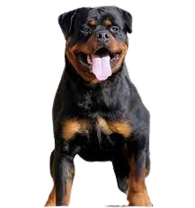

El rottweiler es una raza canina de tipo molosoide originaria de Alemania, aunque fue también usado en la Antigua Roma. Era conocido como «perro carnicero de Rottweil» —en alemán: Rottweiler Metzgerhund— porque estaba acostumbrado a proteger y pastorear ganado y tirar de los carritos de carnicería cargados de carne, junto con otros productos para el mercado. Fue empleado en sus papeles tradicionales hasta mediados del siglo XIX, cuando el tren reemplazó que el ganado fuera arreado al mercado. Si bien todavía se utilizan en el pastoreo, pero sus principales funciones son: perro policía, perro militar, perro de defensa y seguridad, perro guardián, entre otras funciones, según el uso que le den las fuerzas y cuerpos de seguridad y el ejército.
| joven | Adulto | cachorro |
|---|---|---|
|  |